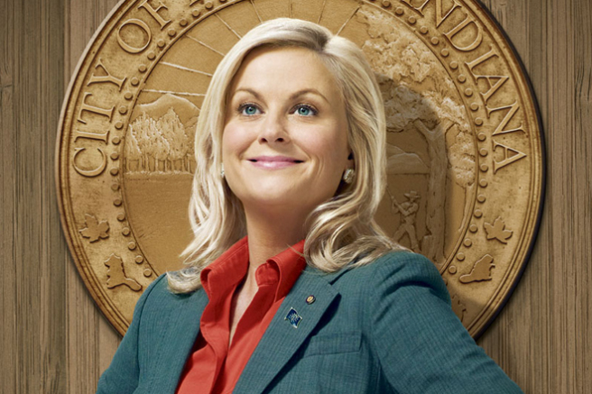
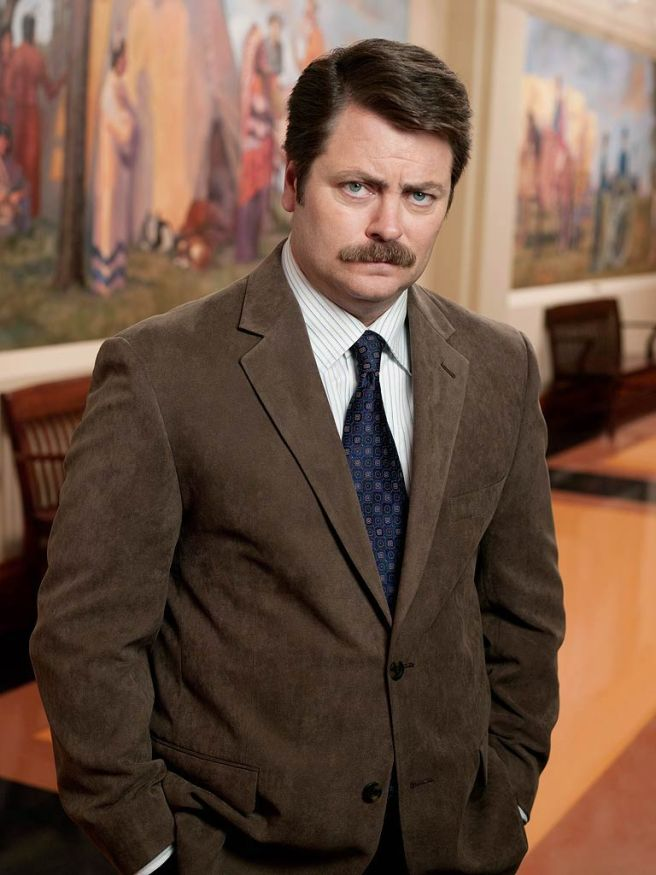
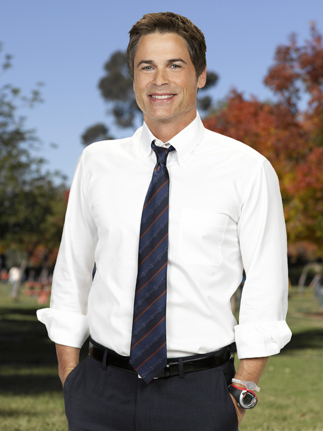
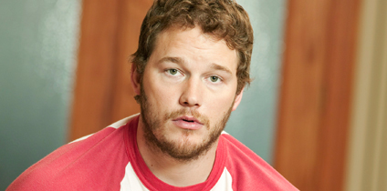
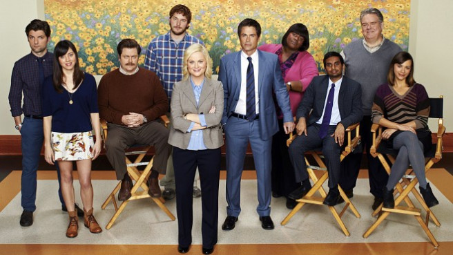

Character Analysis
All characters of Parks and Rec seem to be humble and friendly characters that you would want as your own friend. The jokes that center around them along with the themes encompassing those jokes, represent who they are as a character. This is an analysis of how that relates to what the show is trying to portray.Leslie Knope
Parks and Rec centers around the life of Leslie Knope who devotes her life to the Parks and Rec department and the people she loves (so… basically everyone). There is nothing that she is not passionate about. In perspective, she is the perfect government employee. She’s almost too perfect, or impossibly so. Leslie is the type of government employee the Founding Fathers dreamed about, but who is rarely seen. Along with her devoted love of democracy she is known for her love of the waffles at JJ’s Diner, her major crush on Joe Biden, her goofy anecdotes, and her intricate and strange compliments. It’s hard to pick what other characters are most important to her because she cares so deeply about everyone in the department but to narrow it down: her husband, Ben Wyatt; her best friend, Ann Perkins; and her boss and mentor, Ron Swanson.
| Jokes Included | Theme |
|---|---|
| Eagleton Rivalry | Political Commentary |
| Leslie's Compliments | Friendship |
| Leslie's Love of Waffles | Admiration |
| Run-in's with Councilmen Howser | Ridiculousness |
| Librarian Rivalry | Jealousy |
| Leslie's Crush on Joe Biden | Admiration |
The most important themes including Leslie are Admiration and Friendship. Although she displays all of the themes portrayed in the show, the most prominent feature about Leslie is her love for her job, the community, and her friends and family. However, she does show an array of themes which makes her more human. Although she is known for her perky, enthusiastic self she can display more negative traits such as selfishness, jealousy, and anger. She is not simply a surface-based, happy character. Her true self shines through throughout the seasons, as we can see through the graphs. The jokes of Friendship and Admiration are the ones that help the show gain popularity. Audiences love to see someone who cares and tries her best to solve problems and help make the world a better place. People like to watch Leslie Knope because she is a role model.
Ron Swanson
Ron Swanson is vastly different than Leslie Knope. For a majority of the series he is her boss, and Leslie’s self-imposed mentor. She looks up to him for advice on everything. Ron is a libertarian, a stern and strong advocate for small government, and is extremely closed off. He is a ‘manly man’, who makes his own furniture and has an overwhelming love for meat, breakfast food, whiskey, woodworking, and hunting. Although he works for the parks department he does everything in his power not to help because he firmly believes in privatization. His only kryptonite is his two ex wives ‘The Tammy’s’ (both happen to be named Tammy). In order to further the plot and sometimes create conflict, his purpose is to hold Leslie and the department back, but because of the humble and good feeling tone of the series, Ron always ends up giving in from his own beliefs to help his friends and gives some thoughtful insight along the way.
| Jokes Included | Theme |
|---|---|
| Ron's Love of Breakfast Food | Admiration |
| The Tammys | Jealousy |
| Duke Silver | Ridiculousness |
It is important to note how silly the show is and how it keeps the humor light-hearted and fun; since Ron is the opposite of that on paper, often he is depicted as a juxtaposition of himself. Even the most serious of men have their quirks. His character development is elaborate throughout the seasons, although his love of breakfast foods stays the same. Soon, his weakness towards the Tammy’s ends because of his committed relationship to his wife in later seasons, Diane. Once again, the themes express here (admiration, jealousy, ridiculousness) portray Ron as a real person with multiple sides to him. He is not only a scary, stoic, manly man but also a loving one with weaknesses and a fun side.
Ben Wyatt
Ben Wyatt is introduced into Parks and Rec later in the series as an auditor when Pawnee is in trouble, but is then later offered a job in the town’s government. He develops a relationship with Leslie first because of his admiration of her work ethic, but later through their similar silliness and nerdy qualities. Often times when the other characters are acting irrationally or bizarrely, Ben is the only one offering up what the audience must be thinking with a normal reaction. Ben is often joked about for his passion about Game of Thrones, Calzones, Batman and Settlers of Catan. Though he can be depicted as nerdy and sometimes a bit too normal for Pawnee, he is also Leslie’s backbone and rationalizer. He is also known for running and winning position of Mayor in his hometown at 18 and running it into the ground which he carries on his shoulders throughout the seasons. Overall he is a do-gooder and wants the best for his friends and department just like Leslie.
| Jokes Included | Theme |
|---|---|
| Calzones | Admiration |
| Quitting his Accounting Job | Ridiculousness |
Although Ben is an important part of the show and especially an important part of Leslie’s life, he is more of an acting character. An acting character is one that provides a lot of plot and development to the series. So although he does in fact love calzones, and quit his accounting job a lot, those are only minor details to his character because he plays a more important role than just being silly. This might sound contradictory compared to Leslie’s character but since this world revolves around Leslie, she has the freedom and ability to be silly and make jokes all while bringing a lot to the plot development.
Tom Haverford
Tom works immediately under Leslie in the Parks and Rec Department. Often he serves as her right hand man. Tom is known for his love of high fashion, always wearing the best for every occasion. He is also known to aggressively flirt with women- not usually having the best results. Besides working in the Parks Department, Tom frequently starts entrepreneurial pursuits with his incompetent partner-in-crime, Jean-Ralphio, which often fail. But nevertheless Tom never loses his cocky attitude and sharp wit. Tom’s closest friends along with Leslie are Jean-Ralphio and Donna (who also works at the Parks Department and shares similar qualities to Tom). Although Tom shows a lot of selfishness he never fails in putting aside his own wants to pull through for all of his friends.
| Jokes Included | Theme |
|---|---|
| Tim's Entrepreneurial Ideas | Greed |
| Treat Yo Self | Friendship |
| Jean-Ralphio & Mona Lisa Singing | Ridiculousness |
Tom is an influential character. He tries very hard to make an image for himself and he succeeds in the eyes of the viewers of the show. Tom is known for his impeccable style and catchy phrases, but he is also one of the characters who has a lot of reoccurring jokes and who shows a full range of development and characterization. Although he has a lot of greed with his business ideas and desire to be famous, he would do anything for his friends like on a Treat Yo Self day. The first one we see, Donna and Tom have Ben come along to brighten up his day and most importantly to treat yo self! As for Jean-Ralphio and Mona Lisa singing, those characters are extensions of him and shows his silly side.
Chris Traeger
Chris originally comes to Pawnee with Ben to evaluate the town’s funds but ends up taking a job in the town government and is more encouraged to stay because of his on and off relationship with Ann Perkins (who he later marries). Chris is known for his extremely optimistic attitude and obsession with health and fitness. He often refers to his percentage of body fat, which is 2.8% if you were wondering. Mostly his constant source of enthusiasm drives the Department away but they all appreciate his dedication to his work and to their lives.
| Jokes Included | Theme |
|---|---|
| Chris' "Literally" | Ridiculousness |
Chris is simultaneously the most put together character in the series, and the biggest mess. After he breaks up with Jerry’s daughter, his life becomes a downward spiral. He is an emotional wreck for a long time, but after that he returns to being the most- almost aggressively- enthusiastic person on the show. He often shows this by including the word ‘literally’ into all of his sentences. To any viewer that looks like a fun little anecdote to him, but in reality the writers are commenting on our generations ability to latch onto phrases like conversational crutches. For some people it’s ‘like’ but in Chris’ case it’s ‘literally’.
Andy Dwyer
When viewers first meet Andy, he is in a relationship with Ann Perkins, living on her couch, and injured from a gaping pit in their backyard. After Ann breaks up with him because of his overwhelming immaturity and left to his own devices, he lands a job as a shoe shiner at town hall, and makes his way into the Parks Department. Andy is not the brightest of the bunch but he means well. Andy eventually ends up marrying April Ludgate-his complete opposite. While Andy is blissfully ignorant, April is… not. But they are one of the strongest couples in the shows’ run, holding the longest relationship. Andy is the frontman of the band MouseRat which is a local success, and later becomes a children entertainer named Johnny Karate. Andy is remembered for his and April’s adventurous style and imaginative personas: Burt Macklin, FBI and Janet Snakehole.
| Jokes Included | Theme |
|---|---|
| Burt Macklin, FBI | Ridiculousness |
Andy is a silly character. So gullible and naive, and that shows. He plays Burt Macklin, an FBI agent. Maybe the writers of the show want to poke fun at another government organization? Maybe Burt Macklin is another excuse to give a breather to a more serious subject. Nonetheless, Andy is a fun and beloved character and Burt Macklin is just as much as a fan favorite.
Jerry Gergich
Jerry, otherwise known as Gary, Larry, or Terry; has been an employee of the Parks Department for over 20 years. He is known for his clumsiness and is often a scapegoat for the employees. Although they are all nice people and Jerry tries his best to help his colleagues and be a good employee, everyone seems to hate Jerry with a passion for often times absolutely no reason at all. Jerry has an extremely beautiful wife named Gayle and the Parks Department find the nature of their relationship baffling. Jerry is also known for his artistic side. He once painted a large and incredible mural of Leslie and even showed off his skills as a pianist on local television for a telethon. Although the Department has a strange distaste for him (for no reason) he still loves them dearly.
| Jokes Included | Theme |
|---|---|
| Jerry, Gary, Larry, Terry | Ridiculousness |
| Gayle is Too Beautiful for Jerry | Social Commentary |
Jerry is the scapegoat of the show and he is a perfect example of a joke that just keeps on playing. Everything he does is goofy and clumsy and it’s only right to include him in a few jokes. One social commentary that is made with Jerry’s character is his wife Gayle who is gorgeous and out of Jerry’s league. No one understands how they’re married but Gayle is absolutely in love with Jerry, and that just baffles the Parks Department.
The Town of Pawnee
Pawnee, Indiana is a small town known for its obesity and raccoon problem. Viewers learn a lot about the history of the town throughout the series. Settlers kicked out Native Americans in 1817 claiming the land as “white, Christian land”.
| Jokes Included | Theme |
|---|---|
| Lil Sebastian | Social Commentary |
| Weird Holidays / Celebrations | Friendship |
| Pawnee's Offensive Murals | Political Commentary |
| The Animal Control Team | Political Commentary |
| Raccoon Problem | Ridiculousness |
| Public Forums | Political Commentary |
The most important jokes of the Town of Pawnee is social and political commentary because what else would a government department socializing with the public start? The writers freely portray the citizens of Pawnee to be ridiculous, naive, mislead and unaware of the issues. And that is why it’s important to include different departments such as The Animal Control Team, but also Public forums, and Weird Holidays and Celebrations, because it’s also a chance to include the town and get their own ridiculous and outlandish ideas.